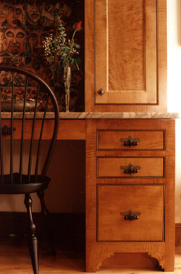

|  |
QUALITY CUSTOM CABINETS Our goal as the Jonathan Brooks House Woodwrights is to build custom cabinets uncompromised in both style and quality. We build cabinetry with the notable charm reminiscent of eighteenth and nineteenth century craftsmanship for contemporary kitchens, libraries, bathrooms and other living spaces. THE HISTORY BEHIND OUR NAME We searched for a symbol that would convey our approach to building cabinets. The Jonathan Brooks House uniquely conveys this sense of timeless beauty and quality. Built in 1809 in Burton, Ohio by Jonathan Brooks, a surveyor with the Moses Cleveland Party, the house was restored to its original splendor in the late 1970s and early 1980s. Great attention to detail and design aesthetics make the Brooks House one of the most authentically restored homes in the Ohio Western Reserve. It is from this tradition that we chose our name and endeavor to fulfill our promise of unique style and quality that can be enjoyed in the fine homes of this generation and those to come. |
|
©2004 - Jonathan Brooks House Woodwrights |